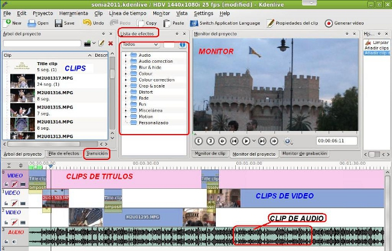

Edición de Audio y video
1. Edición de Video
Segun Wikipedia, "La edición de vídeo es un
proceso mediante el cual se elabora un trabajo audiovisual a partir de
las imágenes obtenidas de un soporte (archivo, cinta, disco óptico) de
vídeo, grabadas previamente. Para ello se necesita reproducir la fuente
y realizar un troceado de la misma. Una vez hecha la revisión de la
fuente se seleccionan los fragmentos de vídeo y audio que formarán
parte del montaje.
Con el desarrollo tecnológico que ha experimentado la industria del
vídeo profesional, han aparecido nuevos sistemas de adquisición de
vídeo en formatos diferentes a la cinta, tales como el P2 de Panasonic
o el XDCAM de Sony.
Existen dos tipos de edición de vídeo, la lineal o analógica y la no lineal o por ordenador".
Existen dos tipos de edición de vídeo, la lineal o analógica y la no lineal o por ordenador".
Cuando hablamos de edición de video, normalmente, nos referimos a la
etapa de post-producción definida en el Tema de Etapas de Elaboración
de Videos Educativos.
Normalmente los podemos resumir en cuatro etapas:
- Mezclamos, en pistas, los diversos elementos que componen nuestra edición: clips de video, sonido, los textos o títulos, los efectos de cada clip, las transiciones (mezclas entre pistas, similar a capas en Gimp), entre otros.
- Generar un fichero final con el producto de toda nuestra edición (exportanción o renderización del fichero)
- Producir nuestro trabajo en un formato y dispositivo universal (Ejemplo: DVD)
- Distribuir nuestro trabajo (streamin, servidores de videos, dispositivos de almacenamiento, entre otros)
En este tema, tal como se ha explicado en el inicio, procederemos a descubrir los aspectos básicos y mínimos para editar un video. Este puede estar compuesto por una o varias pistas. Cada una de las pistas puede constar de clips de video, sonido, título, color, imágenes, entre otros.
Una vez realizado la puesta en la línea de tiempo de cada uno de los elementos se procederá a la personalización de los elementos de la línea de tiempo: recortar partes de clips no deseadas; activar/desactivar propiedades de los clips (ejemplo: el sonido); aplicar efectos de video o sonido para mejorar o resaltar los clips; introducir transiciones entre los diversos clips para darle un resultado más profesional.
La imagen muestra los diversos componentes que pueden componer la edición de video.

Un manual que define los aspectos básicos del Editor Kdenlive. Aunque se refiere a la versión anterior 0.7, los conceptos son los mismos.
Jo.R.C.A. 2004 - 2011

Edición de Audio y Video con Software Libre by José Ramón Cerdeira Alonso is licensed under a Creative Commons Reconocimiento-No comercial-Compartir bajo la misma licencia 3.0 España License